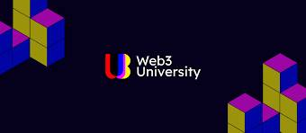
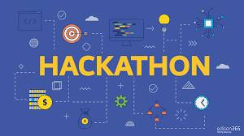
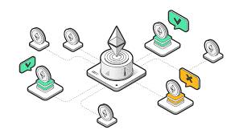

Operational Expenses

Operational Expenses play a critical role in the day-to-day functioning of our organization. Voting on Operational Expenses proposals enables members to make decisions regarding the allocation of resources for essential activities such as infrastructure, staffing, and logistical needs. These decisions directly impact our operational efficiency and sustainability.
Research Projects

With Research Projects, we aim to foster innovation and explore new frontiers. Members can vote on proposals that focus on groundbreaking research initiatives, seeking to push the boundaries of knowledge in our industry. By supporting Research Projects, we invest in the future and nurture a culture of discovery within our organization..
GameFi
The objective of this voting proposal is to implement a robust governance mechanism that enables GameFi participants to vote on critical decisions, such as game features, tokenomics, partnerships, and development roadmap. By providing a platform for the community to voice their opinions and influence the direction of GameFi projects, we can foster a sense of ownership, inclusivity, and accountability within the ecosystem.
Crypto Education
The Crypto Education proposal aims to enhance our members' knowledge and understanding of cryptocurrency and blockchain technology. By voting for this proposal, you contribute to the growth of our community's expertise and pave the way for widespread adoption and innovation in the crypto space.
Hackathon Proposal
The Hackathon proposal aims to organize an exciting and collaborative event where our community members can showcase their skills and creativity. By voting for this proposal, you encourage innovation, collaboration, and the development of cutting-edge solutions within our organization.
Governance Token
Governance Token aims to provide a decentralized governance platform for our community. By voting for this proposal, you actively participate in shaping the future of our organization. You can influence decisions, vote on important matters, and contribute to the overall governance structure of our community.